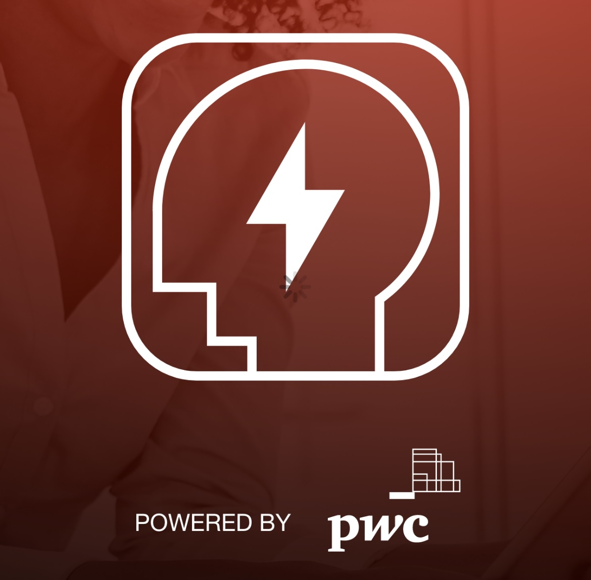
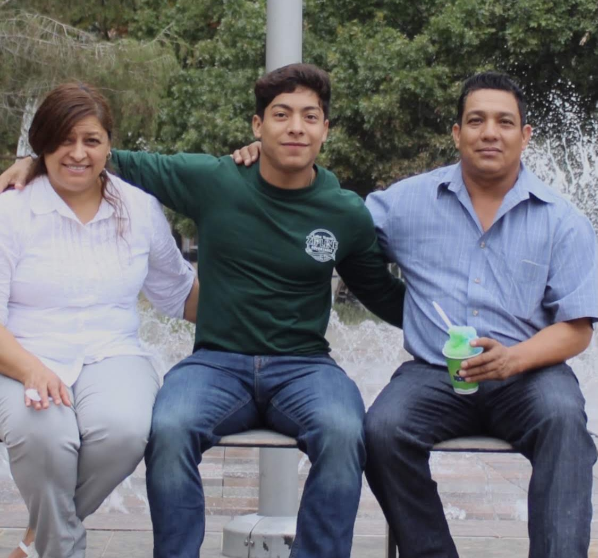

Intro | Profile
Professional team leader with over 3 years of hands-on experience leading successfull teams and digital initiatives by leading project sprints, ensuring high quality delivery, exercising collaborative team and stakeholder management. Able to wear many hats, including training and design. Focused on finding the right questions to asks and assemble.
Continuously fascinated by the intersection between technology, human beings, and life. Passionate about finding solutions difficult problems and enabling others to overcome their obstacles.
Launched and shipped multi-million dollar software products and continue to manage and enhance existing products. Have vast experience in a variety of roles and industries: Product-led growth, software development, product management, product innovation, management consulting, cybersecurity, risk management, agile and scrum methodologies, UI/UX design, big data, corporate strategy, change management, market & consumer research, customer success, academic research, fintech, education, startups, nonprofits, interviews, community engagement, youth activism, economic sustainability, and entrepreneurship.
Currently tackling a variety of social and economic issues: Educational, racial and gender inequality, climate change, youth activism, economic empowerment, affordable education, diversity & inclusion, third-world hunger, mental health, and poverty alleviation.
Work| Projects

ProEdge: As the saying goes, when people thrive, businesses thrive. Empowering our people and our business through ProEdge closed digital skill gaps and inspired a culture of continuous learning throughout the firm. ProEdge helped identify skill gaps, created easy to deploy personalized learning plans based on business strategy, and provided users with courses and certifications that advanced their expertise and careers.
Digital on Demand: Implementing digital assets that accelerated digital transformation, finance tranformation, and drove immediate financial value for clients was a top priority for the firm. Through our inventory of curated and customizable assets, we enabled consultants to encourage clients to leverage bots, workflows and visualizations to scale, increase efficiency, and tranform their organizations.
Digital Fitness App: Throughout the pandemic we released and created our Digital Literacy App with users top of mind. The purpose of our app lies at the center of the firms' business responsibility values. Our effort to educate and inspire friends, colleagues, family, and the broader community through free and accessible educational resources (k-12) meant to digitally upskill users was well-received. With over 60 trending tech topics like AI, Blockchain, Cybersecurity, Robotics, IoT, Drones, AR/VR, and design thinking, users were able to enjoy personalized content, build a digital fitness plan, and digitally upskill.
Change Navigator: Through Change Navigator, we empowered our firm and our people to analyze product and module adoption by identifying impacts, creating a best-fit change plan, and tracking progress against key rollout metrics. Change Navigator created data-driven transparency and drove effective change with powerful data collection tools that won the firm a Vanguard Leaderhip Award in change management.
About

First-Generation: During the '80s, my parents immigrated to the United States with literally nothing to their name. They just knew their vision of a brighter future was out there, and they would work as hard as necessary to bring it to life. Their journey to establish themselves was a tumoltuous and arduous one, but they remained optimistic. My father always said, "If you cannot find a door, find a window, or cut down the shrubs and pave a way." Then came six kids and all of the responsibilities and expenses that come with such a large family. Growing up we didn't have much luxuries or privileges, but I always said that we just had less distractions. I was able to focus on pushing existent boundaries and along with my siblings, we were the first in our family and extended family to graduate from High School and University.
Contact